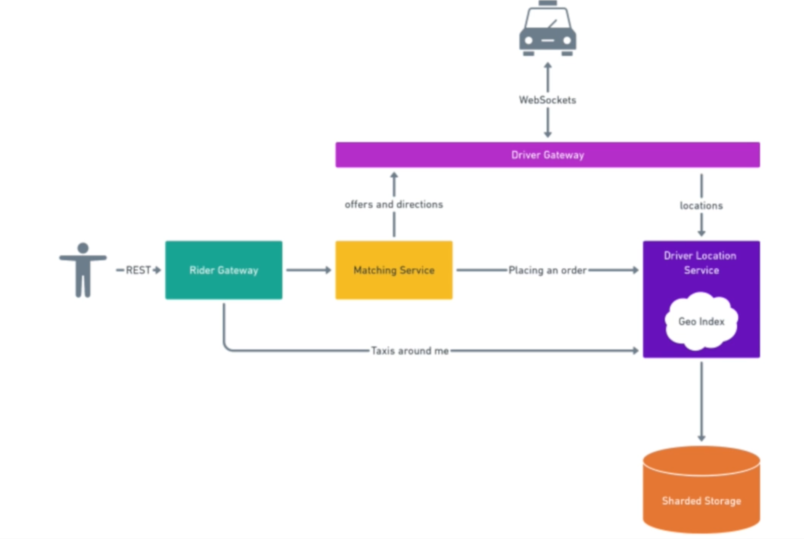

Pragmatic System Design - Uber
Contents
Pragmatic System Design - Uber¶
Main Topics:
Marketplace
Geo-location
Geo-sharding
Marketplace type of system¶
Usually 2 types of users
demand / supply
Riders¶
100M in total => affects the storage requirements
10M active => defines maximum requests per second (stresses the system the most)
10 rides per month on average
Drivers¶
1M in total
500K active drivers
Average shift : 6 hours
NOTE : try to round the numbers (if random) up to help yourself
Driver Locations¶
Queues and gRPC are out of the way due to mobile app being the consumer of the system
We choose “web sockets”, UDP would also have been fine as some message loss is tolerable due to it being a continuous message stream.
Payload : driver_id, lat, long, direction
Calculations:
Drivers sending locations every 5 seconds (assumption)
6 hour shifts => 4 shifts a day with 500K active drivers => 125K drivers at a time
25K location update requests per second
Peak burst can be : 2X, 4K => 50K and 100K req per sec
Storing Locations¶
Need to be able to support 50-100K writes per second
Safely assuming each node can serve 5K writes per second
We use sharing
Region / country based sharding => Some shards become hotspots
Custom polygon location shards (no overlap)
would need a shard-locator service
Lot of maintenance is required
Using geo-spatial library mapping the entire globe into hexagons
Getting Taxis Around Users¶
Show max 10 drivers (assumption)
Refresh every 5 seconds (keeping consistent with driver app)
REST based, as we need 2 operations getting rides and placing order
Calculations:
5 app opens a day (assumption)
1 minute average session (assumption) => 12 refreshes per session
10M active users => 50M app opens a day => 600M Requests per day => 7K req per sec
User can poll every 5 seconds the “Driver Location service” based on user’s general location
Shard-locator with read-replicas can be used (since these are read-only queries).
For getting 10 closest drivers, use geo-spatial query capability database (PostgresQL, MongoDB and MySQL-8 supports)
If interviewer is not familiar with such databases,
We can use a background worker to create a in-memory geo-spatial index ourselves using the driver-location database
Users will query the indexed in-memory data.
User-Driver Matching¶
Approaches
Sequential approach => give rider’s offer to each driver one by one until someone accepts the offer
Parallel approach => give offer to all the drivers and first one to accept, wins the offer.
We can introduce a Drivers Gateway layer which has web-socket connections to all the drivers
We can introduce a Rider Gateway layer where riders will request a match
Matching service queries the driver-location database and calls the driver gateway for offer and notifies the rider
Each internal services can talk to each other with gRPC
Final Design¶
